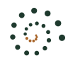
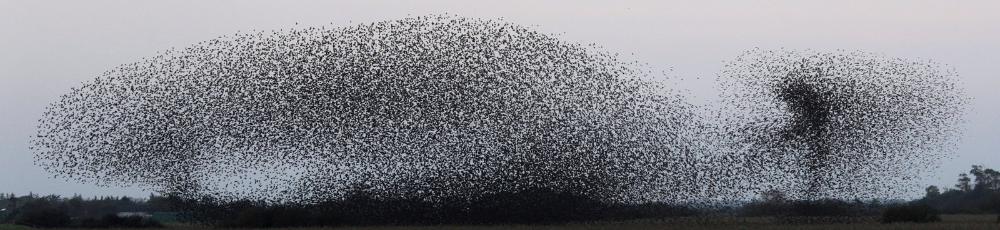

0 pts
photo à venir


Reconnaissez les animaux qui vivent autour de vous.
Vos objectifs
Sélectionnez un territoire en couleur pour le choisir ou le retirer.
Choisissez sur la carte le territoire où partir. L'accueil et « Jouer » ne montreront que lui. Pour mélanger plusieurs territoires ou choisir des familles, il y a l'onglet « Plus de jeux ».
De petits jeux pour s'amuser avec toutes les espèces de vos territoires, même celles pas encore découvertes.
D'autres jeux viendront s'ajouter ici.
On protège mieux ce que l'on connaît. Myriade vous invite à découvrir les animaux de votre territoire, l'un après l'autre : leur allure, leur façon de vivre, les liens qui les unissent aux autres espèces et à leur milieu. Au fil des expéditions, dans des lieux bien réels, vous apprenez à les reconnaître et votre carnet se remplit de ce que vous avez vraiment appris. Sans pression ni punition, juste le plaisir de découvrir, à votre rythme.
Myriade se construit pas à pas, et vous pouvez y prendre part. Chaque message est lu ; tout ce qui entre dans le jeu est d'abord vérifié.
Vous avez photographié un animal du jeu ? Une photo nette d'un animal entier, vivant, dans son milieu. Vous restez l'auteur : votre nom apparaît dans les crédits.
Proposer une photoUne taille, une alimentation, un territoire qui vous semble faux ou incomplet ? Indiquez si possible votre source.
Signaler une correctionUne question ambiguë, un écran peu clair, un jeu que vous aimeriez voir : vos remarques font avancer Myriade.
Envoyer une idéePour tout le reste : myriade.encyclopedie@gmail.com
Chaque caractéristique d'une fiche est cherchée plusieurs fois, de façon indépendante, puis recoupée entre plusieurs sources. Une valeur qui n'est pas confirmée n'est jamais utilisée dans les questions. Les principales sources :
S'y ajoutent de nombreuses sources ponctuelles (universités, muséums, associations, parcs nationaux). Le détail de chaque valeur (source et phrase citée) est tenu dans les tableurs du jeu.
Les territoires suivent les grandes régions écologiques (GRECO) définies par l'IGN. Contours tirés de la couche des sylvoécorégions, © IGN – Inventaire forestier national, licence ouverte Etalab.
Les textes des lieux s'appuient sur les parcs nationaux et régionaux, l'Office français de la biodiversité, les services de l'État en région et la convention de Ramsar, avec deux sources pour chaque affirmation.
Les empreintes et les pictogrammes sont des dessins originaux, tracés pour le jeu.
Les silhouettes des espèces viennent de PhyloPic, une banque de silhouettes libres ; elles ont été retracées d'une seule couleur. Quand il n'existe pas de dessin de l'espèce, celui d'une espèce proche est utilisé (indiqué « d'après … »).
Les photos des espèces viennent de Wikimedia Commons et d'iNaturalist, sous licence libre ; la photo de Strasbourg est une photo personnelle de l'auteur du jeu. Elles restent la propriété de leurs auteurs et sont utilisées selon leur licence ; certaines ont été recadrées ou réduites. Le nom de l'auteur renvoie à la photo d'origine. Quelques auteurs restent à identifier : si l'une de ces photos est la vôtre, elle sera créditée ou retirée sur simple demande à myriade.encyclopedie@gmail.com.
Les cris viennent de xeno-canto, de Wikimedia Commons et d'iNaturalist. Ils restent la propriété de leurs auteurs ; ils ont été raccourcis à quelques secondes.
Les titres sont en Literata (The Literata Project Authors) et le texte en Work Sans (The Work Sans Project Authors), deux polices libres sous licence SIL Open Font License 1.1, intégrées au jeu.
La nuée d'étourneaux du bandeau : « Dance of the Starlings », par Conni Nielsen, Wikimedia Commons, licence CC BY 3.0 (recadrée).